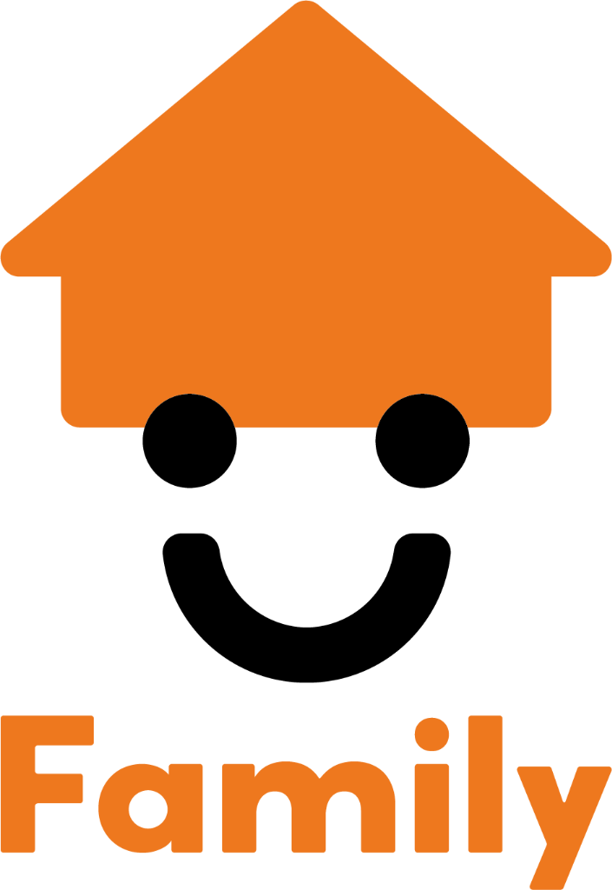

事前設定担当者が入力
この画面はご契約の準備です。入力して保存すると、お客様にお渡しする画面へ進みます。

お客様 様
ご契約ありがとうございます。
納車までに必要な書類をご案内させていただくために、
情報の入力をお願いいたします。
画面の案内にそって、あてはまるものを選んでください。
あとから「戻る」で直すこともできます。
下取りのご確認
この画面では、いま お乗りのお車について、下取りのためにお伺いします。
1車検証に書かれている所有者は、ご本人ですか？
担当者確認 このあと担当者がくわしくお伺いします。そのままお進みください。
2車検証に書かれている使用者のご住所は、いま お住まいのご住所ですか？
担当者確認 このあと担当者がくわしくお伺いします。そのままお進みください。
車庫証明のご確認
この画面では、お車を停める場所を警察へ届け出るために必要なことをお伺いします。
1駐車場のご住所は、いま お住まいのご住所と同じですか？
1-1お住まいから駐車場まで、まっすぐ測って2km以内ですか？
担当者確認 このあと担当者がくわしくお伺いします。そのままお進みください。
2駐車場の土地の持ち主は、どなたですか？
担当者確認 このあと担当者がくわしくお伺いします。そのままお進みください。
3駐車場は、いま お乗りのお車と入れ替えになりますか？
任意保険のご確認
この画面では、ご購入いただいたお車の任意保険についてお伺いします。
1おもに運転される方は、どなたですか？
2その方の生年月日を教えてください。
選んだ日付が正しくありません。年・月・日をご確認ください。
3その方の免許証の色を教えてください。
4月に15日以上、通勤や通学でお使いになりますか？
5ほかに運転される可能性のある方はいらっしゃいますか？（あてはまるものをすべて選んでください）
営業マンのメモ担当者記入欄
ご用意いただく書類
お客様 様にお願いする書類を一覧で表示しております。
見本を参照しながら、書類への署名・捺印をお願いいたします。
書類名を押すと見本が開きます。
約款のご確認とご署名
約款をご確認のうえ、「お客様ご署名」の枠内にご署名をお願いいたします。
※事前設定で選んだ店舗の約款を表示します。
お客様ご署名
内容をご確認のうえ、下の枠内にご署名をお願いいたします。ご署名があると「次へ進む」が押せるようになります。
ここに指またはタッチペンでご署名ください
ご納車までの流れ
ここからご納車までの流れをご案内します。ご不明な点は担当者へお気軽にお申し付けください。
これからの流れ
書類のご用意前の画面でご案内した書類をご準備ください。（ダミー文言）
書類のご提出そろった書類を担当者までお渡しください。（ダミー文言）
登録のお手続き当社で登録のお手続きを行います。（ダミー文言）
ご納車日のご連絡準備ができ次第、担当者よりご連絡いたします。（ダミー文言）
ご納車当日はお車の説明をさせていただきます。（ダミー文言）
LINEのお友だち登録
ご連絡がスムーズになります。よろしければご登録をお願いいたします。
※実際のQRコードは後で差し替えます。これは図形のダミーです。
最終確認担当者が操作
入力内容をご確認ください。担当者が確認する項目をすべてチェックすると、完了できます。
担当者が確認する項目
お客様の回答から自動で挙がった項目です。すべて確認すると完了できます。
実施記録
ご案内した内容にチェックを入れてください。